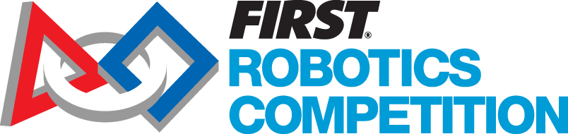

Explain what FIRST Robotics Competition is and how it is different from other robotics programs.
Describe the basic FRC season cycle from kickoff through competitions.
Identify how FRC values such as Gracious Professionalism and Coopertition shape team behavior.
Recognize what happens at a regional event, especially the Iowa Regional at UNI.
Choose realistic ways to contribute to the team before, during, and after competition.

FRC is a varsity-style engineering challenge
Build
Teams design, manufacture, wire, program, and iterate an industrial-sized robot for a new game each year.
Compete
Robots play on a themed field with two alliances of three teams. Matches combine autonomous, driver control, strategy, and teamwork.
Grow
Students also fundraise, create media, present to judges, mentor younger teams, and build community support.
Key idea: FRC is more than building a robot. It is a complete team project that connects engineering, business, outreach, communication, and leadership.
Who Can Join?
FRC needs many types of students
Mechanical
Build structure, mechanisms, drivetrains, intakes, climbers, and repairs.
Electrical
Wire power, CAN, sensors, pneumatics, labels, battery systems, and troubleshooting.
Fundraise, create media, plan outreach, write awards, and communicate impact.
5041’s standard fits FRC well: Everyone has a place here. Students can enter with no prior experience and grow into roles over time.
Interactive Check
Click to reveal ways students can contribute
0 of 8 roles revealed.
Season Structure
The FRC season moves fast
1
Preseason training and team organization
2
January kickoff and game reveal
3
Build, program, test, and iterate
4
Regional competitions and judging
5
Off-season learning, outreach, and recruiting
FRC rewards teams that learn quickly, divide work clearly, document decisions, and keep improving even when the robot is not perfect.
Interactive Check
Sort each task into the season stage
Scout qualification matches
Talk with judges in the pit
Read the new game manual
Prototype an intake
Review what to improve next year
Tune autonomous paths
Train new students on tools and safety
Run a community robot demo
Preseason
Kickoff
Build Season
Regional Event
Off-Season
FIRST Values
The robot matters, but culture matters too
Gracious Professionalism
Compete intensely while treating teammates, opponents, volunteers, judges, and mentors with respect.
Coopertition
Teams compete on the field but still help each other learn, repair, and improve.
More Than Robots
FRC includes leadership, inclusion, fundraising, technical learning, outreach, and long-term community impact.
Interactive Scenario
Choose the strongest FRC response
A team in the next pit asks to borrow a tool right before playoffs. Your robot also needs work. What is the best response?
Choose one answer.
Iowa Regional
The Iowa Regional is 5041’s major FRC event in Iowa
Where it happens
The Iowa Regional is hosted at the University of Northern Iowa in Cedar Falls. Matches take place in the McLeod Center, while pits, practice field, pit administration, and support spaces are in the adjacent UNI-Dome.
What it feels like
Expect a mix of sports event, engineering fair, team showcase, repair shop, strategy room, and celebration of student learning.
For recent Iowa events, more than 50 teams from Iowa and nearby states have competed, with qualification matches, awards, playoffs, and team pits open to visitors.
Regional Experience
A regional competition has many moving parts
Pits
Team workspaces for repairs, inspection, batteries, tools, and robot preparation.
Field
The match area where alliances compete in autonomous and driver-controlled periods.
Scouting
Students collect match data to understand team strengths and support strategy.
Judging
Judges visit pits and interview teams about design, outreach, safety, culture, and awards.
Interactive Match
Match each regional area to what happens there
Line up before matches and stay match-ready
Drive robot in alliance matches
Repair robot, charge batteries, and talk with visitors
Scout teams and cheer respectfully
Explain design choices, outreach, and team impact
Confirm the robot follows the rules
Pit
Field
Stands
Inspection
Judging
Queue
Competition Day Habits
Strong teams manage energy, time, and information
Before Matches
Check battery, bumpers, mechanisms, driver station, radio, pneumatics, tools, and match schedule.
During Matches
Stay focused, communicate clearly, respect field staff, and adjust strategy based on real robot performance.
After Matches
Return to the pit, inspect damage, review data, make fixes, and prepare for the next match.
Interactive Check
Click the behaviors that build a strong regional experience
Select the strongest regional behaviors.
Required Quiz
Pass to complete the module
Each question is on its own slide.
Answer all 15 questions, then grade the quiz. Score at least 13 out of 15 to unlock the completion certificate.
Before the Quiz
Enter your name
This name will appear on your completion certificate.
Quiz Question 1
1 of 15
What is FIRST Robotics Competition?
Quiz Question 2
2 of 15
When is the FRC game usually revealed?
Quiz Question 3
3 of 15
In a typical FRC match, teams compete as:
Quiz Question 4
4 of 15
Which student role is part of FRC?
Quiz Question 5
5 of 15
What does Gracious Professionalism mean in FRC?
Quiz Question 6
6 of 15
What is Coopertition?
Quiz Question 7
7 of 15
Where is the Iowa Regional traditionally hosted?
Quiz Question 8
8 of 15
What happens in the pits at a regional?
Quiz Question 9
9 of 15
Why does scouting matter?
Quiz Question 10
10 of 15
What should a team do after a match?
Quiz Question 11
11 of 15
What is a realistic description of the regional experience?
Quiz Question 12
12 of 15
Which action best represents 5041 and FIRST values?
Quiz Question 13
13 of 15
What is the purpose of judging and awards?
Quiz Question 14
14 of 15
What should new students remember about FRC?
Quiz Question 15
15 of 15
What is the best summary of FRC?
Quiz Results
Grade the quiz
You need at least 13 out of 15 to unlock the completion certificate.
Not submitted.
After passing, advance to the final completion certificate.
5041 CyBear Robotics
Certificate of Completion
Presented to
Student Name
for successfully completing the
What is FIRST Robotics Competition? Training Module